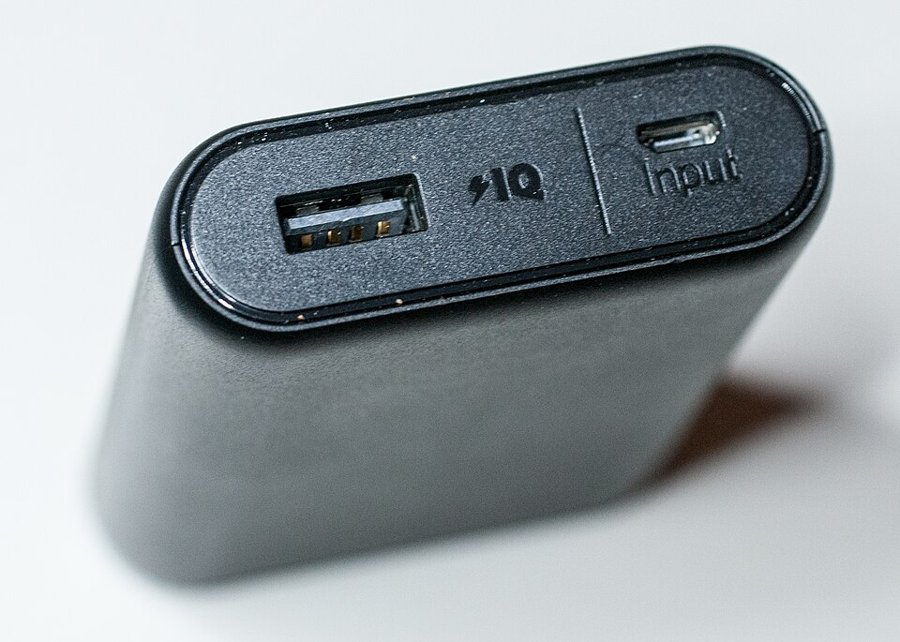

By Tyler Simons, a 15-year-old developer and maker who reviews the tools he actually lives with.
Four products I've used enough to have opinions about. Tap any for the full write-up.

A brick that does one job quietly and never makes a fuss about it. The review is about why "boring" is the highest praise a battery can earn.
A screwdriver that earns desk space not because it's motorized, but because the dock turns "I should fix this" into a ten-second reach.
The printer that sits on my desk and quietly changes how often I'm willing to fail at a design. A long-term, daily-use review.
The OLED model's headline is the panel, and it's not marketing fluff. The review covers what actually changes in daily play.
Why a fifteen-year-old's review is worth a company's time.
I don't summarize spec sheets. I use the thing until I have something real to say about it.
I'm Tyler Simons, a 15-year-old developer and maker. I run local AI models on a PC I built myself, I 3D-print enclosures for hardware projects, and I've been taking electronics apart longer than I've been able to buy my own tools.
That background is why my reviews read differently. I print with the printer, charge with the power bank, and open the laptop. I know what a Torx screw feels like when the bit doesn't quite seat, and what a slicer setting does to an overhang when you get it wrong. That's the detail a PR contact remembers — and the detail a fake review can't fake.
I'm not a publication with an editorial calendar. I'm one person who cares about getting the details right, which is exactly the kind of reviewer small and indie brands should want.
I'm always looking for the next thing to put through its paces. Send a product, a sample, or just an email — I'll respond fast and tell you exactly how I'd approach it.
Honest status of imagery on this site:
Anker PowerCore 10000 — photograph by Ralf Roletschek, licensed under GFDL via Wikimedia Commons.
Nintendo Switch (OLED) — photograph via Wikimedia Commons (CC license).
Bambu Lab P1S & Fanttik E1 NEX — currently typographic placeholders. I plan to use my own photos (P1S especially) and/or each brand's press kit with attribution. No manufacturer imagery is displayed without permission.
If you represent a brand and have press assets you'd like featured, email me and I'll add them with proper credit.